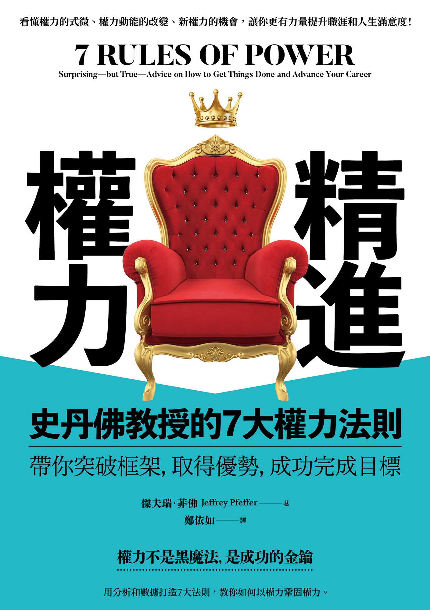
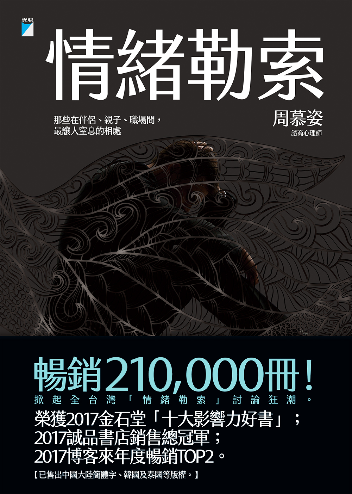
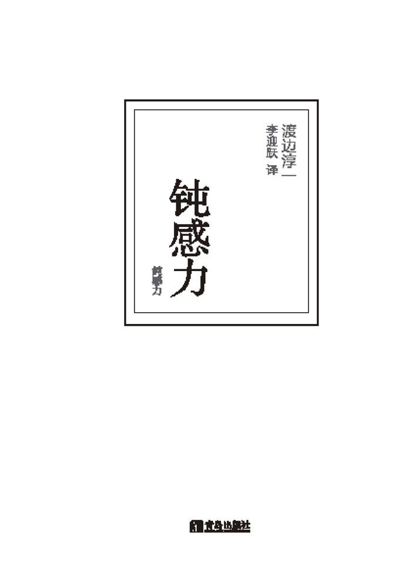
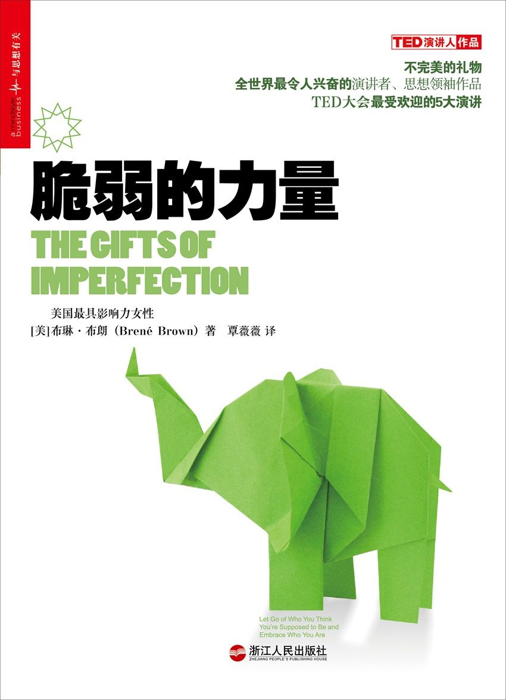

面對壓力的僵住與討好：
分辨生理與互動反應
遇到當眾斥責或強勢施壓，身體可能出現心率變化、肌肉緊繃，以及短暫停止動作。威脅研究將其中一類反應稱為「防衛性僵住」（freezing），涉及自主神經對警覺與行動準備的協調。先道歉、附和或接受要求，則可能是為了降低衝突而採取的人際應對，不能直接視為同一種神經反射。《強大內心的自我對話習慣》協助整理事後反芻，《如果父母情緒不成熟》提供辨認既有互動習慣的角度。你可以先爭取回應時間，再重新確認立場。
面對強勢要求，有時一時難以回應；事情過後，卻仍反覆回想當時的對話。理解這些反應，可以從辨認眼前的壓力與選擇開始。
這裡整理十本書，陪你看清關係裡的權力、放下反覆自責，練習更清楚地表達自己的需要。
在職場高壓會議與過往家庭生活中，面對強勢者時習慣妥協退讓，獨處時卻反覆重播自責。
當場退讓與事後反芻，可能與壓力、過往經驗及所處關係有關；值得分開理解與處理。
遇到當眾斥責或強勢施壓，身體可能出現心率變化、肌肉緊繃，以及短暫停止動作。威脅研究將其中一類反應稱為「防衛性僵住」（freezing），涉及自主神經對警覺與行動準備的協調。先道歉、附和或接受要求，則可能是為了降低衝突而採取的人際應對，不能直接視為同一種神經反射。《強大內心的自我對話習慣》協助整理事後反芻，《如果父母情緒不成熟》提供辨認既有互動習慣的角度。你可以先爭取回應時間，再重新確認立場。
離開衝突現場後，有些人會反覆回想：「剛剛為何沒有反駁？」「對方是否認為我軟弱？」「為何我又退讓了？」伊森·克洛斯（Ethan Kross）在《強大內心的自我對話習慣》中討論這類反覆自我對話，以及如何透過心理距離調整思考角度。試著像安慰朋友一樣對自己說話，讓注意力從無休止的責備回到可以採取的下一步。
「公正世界信念」容易讓人預期努力與善意終會獲得合理回報。傑夫瑞·菲佛在《精進權力》中提醒，組織資源的分配還涉及關係網絡、成果能見度與決策影響力。若只等待他人主動肯定，可能錯過表達貢獻與爭取支持的時機。可以開始辨認決策流程、合作關係及資源分配方式，讓努力轉化為可見的專業貢獻。
琳賽·吉普森在《如果父母情緒不成熟》中描述，部分孩子為了維持關係，可能過早習慣留意照護者的情緒，並壓抑自身需求。周慕姿在《過度努力》中則討論，擔心遭到否定的人，可能透過過量承擔尋求肯定。早年經驗不會決定成年後的所有選擇。辨認哪些責任出於自願、哪些源於害怕拒絕，能協助自己逐步調整關係界線。
單靠正向鼓勵，可能忽略威脅下的生理反應、現實職場的資源分配，以及事後反覆自責的困擾。
閱讀起點可以依當前壓力、關係困難與職場需求調整。先找到最急迫的問題，再逐步理解界線、組織規則與長期互動習慣。
以下三個常見盲點，可能讓閱讀偏離眼前真正需要處理的問題。先整理當下最迫切的困擾，再選擇合適的書。
當一個人仍受職場壓力、失眠或反覆自責困擾時，深入回顧童年經歷未必是適合每個人的第一步。可以先整理當下最急迫的壓力，練習休息與界線，再依自身狀況決定探索過往經驗的步調。
可以先從《強大內心的自我對話習慣》練習拉開與自責念頭的距離，再參考《鈍感力》，辨認哪些評價值得回應、哪些可以放下。這些方法能成為日常練習，效果與所需時間仍因人而異。
若完全迴避討論權力，可能忽略組織裡實際存在的資源分配與決策程序。《懂權力》提供另一個視角：行使影響力也涉及角色責任及對他人的支持。
《精進權力》有助於辨認組織的資源及決策規則；《懂權力》討論角色責任與高低姿態；《給予》則提醒讀者兼顧他人的需要與自身資源。三者可以相互補充。
當職場關係存在反覆施壓、威脅或不尊重界線的情況，揭露個人脆弱經驗前宜先確認信任程度。某些訊息可能被不當利用，但不能只憑一次衝突就判定對方的人格。
在權力失衡的對話中，可以先核對事實、交付成果與責任界線，再決定適合分享多少個人感受。必要時參考《關鍵對話》的對比說明方式，釐清自己提出要求的目的及不包含的意思。
| 演化階梯 | 階段核心目標 | 主力攻堅書目 | 達成檢核指標 |
|---|---|---|---|
| 階梯 I 整理當前壓力 辨認反芻與注意力調整 | 先整理反覆自責的念頭，練習拉開心理距離，再回到眼前能採取的行動。 | 《強大內心的自我對話習慣》 《鈍感力》 互補支援：《自我慈悲》 |
能察覺反覆自責的起點，並嘗試一次抽離自語、書寫或其他適合的整理方式。 |
| 階梯 II 練習關係界線 辨認要求與分配責任 | 區分合理請託與持續施壓，參考「停、看、應」整理自己的意願、責任及回覆方式。 | 《給予》 《情緒勒索》 互補支援：《關鍵對話》 |
能清楚說明可以承擔的範圍，必要時延後答覆，而不要求自己完全消除罪惡感。 |
| 階梯 III 理解職場權力 組織規則、角色與成果 | 理解權力、角色責任與成果能見度，依具體處境選擇合適的溝通方式。 | 《懂權力，在每個角色上發光》 《精進權力》 《職場女性：別讓細節絆住你》 |
能以具體資料呈現一項專業貢獻，並在適合的場合提出問題或建議。 |
| 階梯 IV 調整長期習慣 自我價值與互動界線 | 回顧早年互動可能留下的期待，辨認過度努力與完美主義如何影響當下的選擇。 | 《如果父母情緒不成熟》 《過度努力》 《脆弱的力量》 |
能辨認一項過度承擔的責任，並嘗試調整安排，為休息與個人需要保留空間。 |
身心疲憊或反覆思考時，要開始閱讀可能並不容易。
可以先從一個與眼前處境有關的問題出發，逐步建立適合自己的閱讀習慣。
不必要求自己一次讀完一本書。若最近經常承接他人的請託，可以先閱讀《給予》第六章，了解付出者如何兼顧自己與他人的需要。若持續反覆自責，可以從《強大內心的自我對話習慣》的抽離式自我對話開始。讀完一小段，再決定是否繼續深入。
會議中遭到尖銳質疑時，不必立即反駁，也無須一味附和。可以先確認對方提出的是資料疑點、工作分歧，還是需要處理的互動界線。《懂權力》第二、三章討論高低姿態的選擇，提供依情境調整溝通方式的角度。
有些退讓出於現實考量，有些與長期形成的互動習慣有關。《如果父母情緒不成熟》協助讀者理解關係中的期待與界線。可以先記錄自己在哪些場合難以拒絕，再判斷哪些回應需要調整，無須直接把每次退讓歸因於童年經驗。
《精進權力》提醒讀者，工作成果與組織評價之間還涉及關係、資源及決策流程。遇到不合理的分工時，可以先核對職責、成果和決策者，再思考如何提出具體要求。理解權力運作，有助於作出更務實的選擇。
在意別人的感受，不代表必須負責解決對方的所有困擾。《情緒勒索》協助辨認以恐懼與罪惡感施壓的互動，《鈍感力》則提供面對日常評價的另一種態度。先確認自己實際承擔的責任，再選擇是否及如何回應。
可以為自己預先安排一項簡單練習：如果睡前又想起白天的衝突，那麼先記錄需要查證的事實，再用自己的名字提醒自己明天可以如何處理。《強大內心的自我對話習慣》提供抽離式自我對話與書寫等工具，實際效果仍需依個人情況觀察。
從組織權力、人際界線、內在對話與自我照顧等角度，提供十本不同的閱讀入口。
每本書附有書封、情境導讀、閱讀心法與專書頁。摘記由本站編輯依原著觀點整理，並非作者逐字引文。










精選五本在溝通、談判與邊界建立上具實用性的工具書，依日常遇到的具體難題整理適用情境與對話提醒。
利害關係高、雙方情緒緊繃但具有共同利益的商業或職場協商。運用對比說明法（Contrasting）維持對話安全感。
若對方反覆威脅、辱罵或拒絕遵守討論規則，單靠溝通技巧未必能改善情況。可以暫停對話、記錄事實，必要時尋求協助。
將情緒提煉為「觀察、感受、需要、請求」，向具備善意的合作者提出精確具體的行動指標。
分享感受與需要前，可以先評估互動是否相互尊重。若對方反覆施壓，可以縮小揭露範圍，並清楚說明界線。
當內心產生嚴苛的自我評判與罪惡感時，以對待摯友的溫和視角取代批判，中斷負面內耗。
對自己保持友善，也可以同時檢視實際工作問題。需要時仍須確認事實、責任分工與後續行動。
提供思考成長經驗與當下人際期待、權威互動可能存在何種關聯的角度。是否適用於自己，需要依個人經驗判斷。
回顧家庭經驗可能引發情緒，也不一定能解釋所有職場問題。可以同時檢視目前的具體事件、界線與可用資源。
從「課題分離」的觀點，嘗試區分自己能負責的選擇與他人的反應，減少為所有評價反覆自責。
課題分離旨在分清人際責任，在組織協作中仍須維持專業成果的交付與必要結盟。
依目前的人際或職場處境勾選相關情境，可複選。結果只提供閱讀方向，協助你選擇想先了解的主題。
探索情境（請勾選符合此刻感受的項目，可複選）：
以下分數依照你的勾選整理，幫助你找到適合的閱讀起點。各面向滿分 12 分，協助你聚焦當前最想探索的主題。
面對突如其來的高壓對話，往往難以及時整理思緒。這裡整理六個常見的應對練習，並標註原書對應的篇章，方便你在需要時翻閱與嘗試。
接到新增工作時，可以先說明已承擔的任務，再請主管確認優先順序。此練習參考《職場女性》對不合理任務與有限資源的討論。
當對方因失望或憤怒而要求立即配合，可以先表示已聽見訴求，再說明能承擔的事項與答覆時間。原書第五章建議依自己的性格調整界線技巧。
《給予》第七章討論辨認索取者與調整互動策略。面對反覆請託，可以提供資訊或方法，同時說明哪些工作仍需由對方負責。
《懂權力》第二、三章討論如何依情境採取高姿態或低姿態。面對質疑時，先確認問題能否當場回答；尚待核實的資料可以約定查證及回覆方式。
遇到刺耳的評語時，先分辨哪些內容需要回應，哪些可以放下。讓別人的一句話不必占據你一整天的心力。
原書介紹使用姓名或非第一人稱對自己說話、想像未來視角等方法。在思緒紛亂時練習拉開心理距離，讓緊繃的心情逐步安定下來。
本站整理十本核心專書的 EPUB 閱讀資源，供核對書目與選擇閱讀順序。
下載後可使用支援 EPUB 的閱讀器開啟，也可依需要選擇具備朗讀或 AI 閱讀輔助功能的工具。
不必一次讀完，也不需要立刻解決所有問題。
可以先記下一個值得繼續閱讀的問題。其他事情留到下次，讓今天的閱讀在此告一段落。